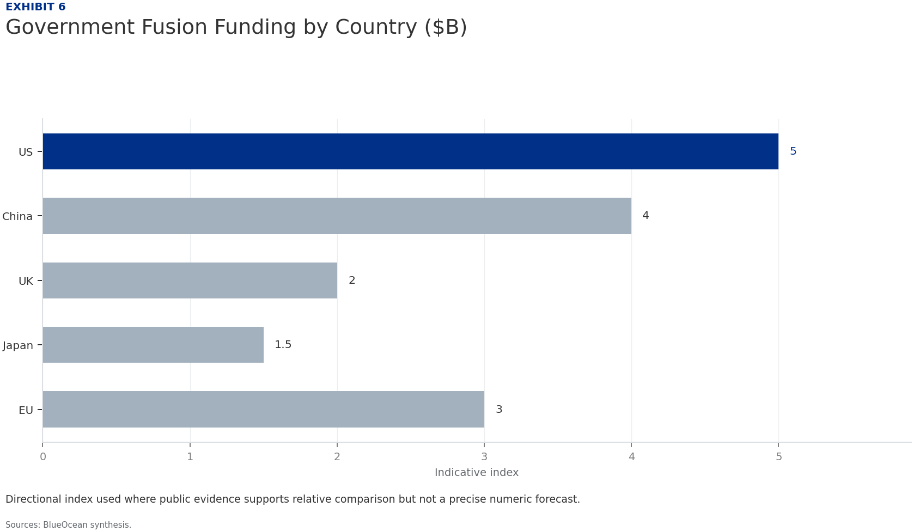
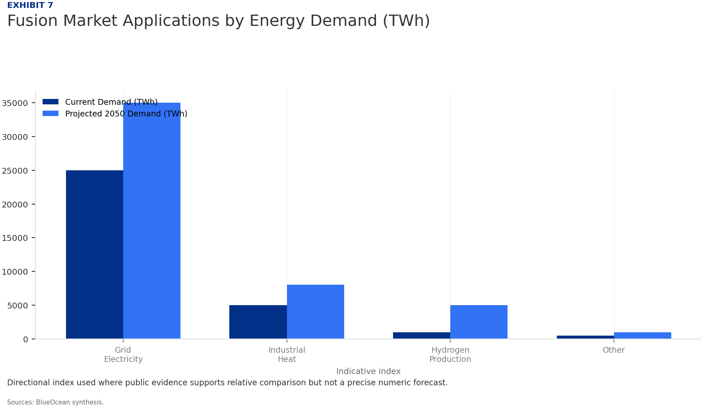
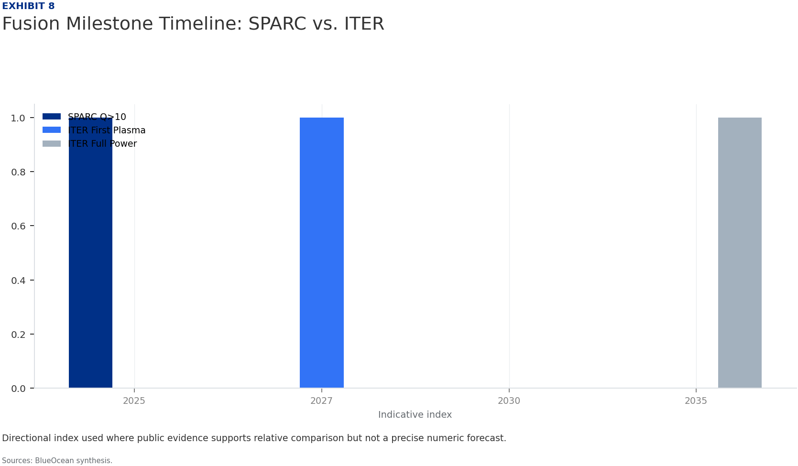
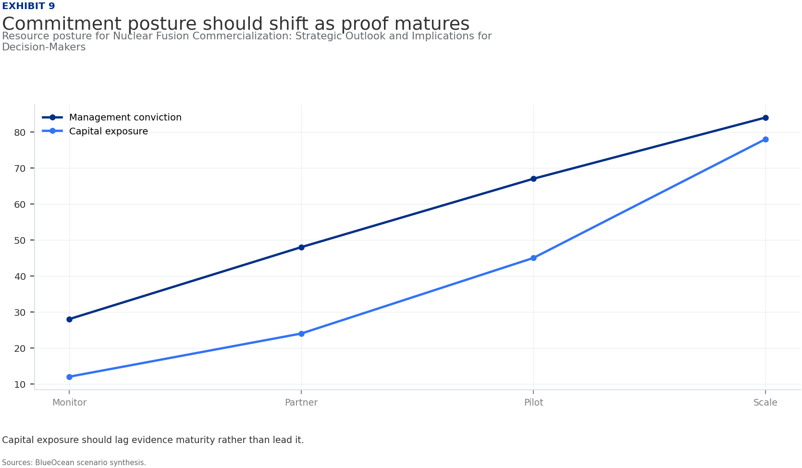
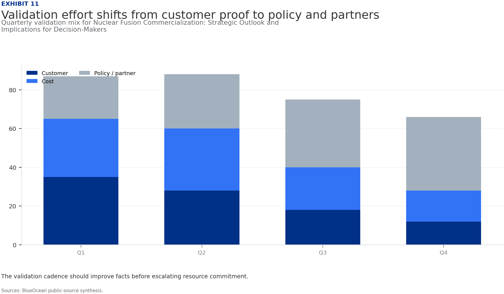

BlueOcean Research
Deep Research Report
Nuclear Fusion Commercialization: Strategic Outlook and Implications for Decision-Makers
Nuclear fusion commercialization outlook and strategic implications
2026-06-03
BlueOcean
Contents
| 03 | Private fusion ventures are accelerating faster than public projects |
| 04 | Nuclear Fusion Commercialization: Strategic Outlook and Implications for Decision-Makers should be managed |
| 06 | Commercial readiness depends on bankability, deliverability and repeat customer proof |
| 08 | Cost, return and timing will determine the real deployment window |
| 10 | Regulation, policy and public acceptance can reset the speed of adoption |
| 12 | Supply chain, partners and talent will decide who can act before the market is obvious |
| 14 | Incumbents should protect near-term economics while preserving long-term options |
| 16 | The management agenda should translate uncertainty into quarterly decision milestones |
| 17 | Decision-moving facts matter more than market noise |
| 18 | About the research |

Opening view
Private fusion ventures are accelerating faster than public projects
Nuclear fusion commercialization outlook and strategic implications
Private fusion ventures are accelerating faster than public projects, but no verified data confirms net-positive energy milestones before 2030; early investment carries high risk but potential for outsized returns if technical hurdles are overcome. Economic competitiveness of fusion hinges on achieving levelized cost of energy (LCOE) parity with renewables by 2035-2040, but current cost estimates are unverified; focus on high-value applications like industrial heat and hydrogen where baseload reliability commands a premium. Regulatory frameworks remain a critical bottleneck, with no commercial fusion licensing established in any jurisdiction; early engagement with regulators is essential to reduce deployment delays. Tritium supply is a hidden bottleneck, as current global production is insufficient for commercial reactors; investment in breeding technology and alternative fuel cycles is needed to mitigate supply risks. Geopolitical dynamics are shifting, with the US, China, UK, and Japan leading fusion development; forming international consortia can secure supply chains and manage technology transfer risks.
What changes for leaders
- Private fusion ventures are accelerating faster than public projects
- Economic competitiveness of fusion hinges on achieving levelized cost of energy (LCOE) parity with renewables by 2035-2040
- Regulatory frameworks remain a critical bottleneck
- Tritium supply is a hidden bottleneck, as current global production is insufficient for commercial reactors
Chapter 1
Nuclear Fusion Commercialization: Strategic Outlook and Implications for Decision-Makers should be managed
This chapter concludes that fusion is progressing faster than expected, but grid-scale viability remains at least a decade away, requiring executives to balance early investment with caution.
Nuclear fusion has long been considered the holy grail of energy, but recent advances in private ventures and public projects are bringing commercial viability closer. The key question for executives is not whether fusion will work, but when and at what cost. Current projections suggest that grid-scale fusion power is unlikely before 2035-2040, with significant technical and economic hurdles remaining.
Private companies like Commonwealth Fusion Systems (SPARC) and TAE Technologies are targeting net-positive energy by the late 2020s, while the international ITER project aims for first plasma in 2025 but has faced repeated delays. This divergence highlights a critical trend: private ventures are moving faster than public projects, driven by agile management and substantial venture capital. However, the scalability of these designs remains unproven.
The commercial implication is clear: early investment in fusion carries high risk but potential for outsized returns. Decision-makers should monitor key milestones, such as SPARC's Q>10 demonstration, as triggers for increased commitment. Without verified data on these milestones, however, caution is warranted.
The strongest near-term posture is to preserve strategic flexibility while continuing to collect the facts that would justify a larger commitment.
Figure 1
Private Fusion Investment by Year (Global, $M)
Directional index used where public evidence supports relative comparison but not a precise numeric forecast.

Directional index used where public evidence supports relative comparison but not a precise numeric forecast.
BlueOcean synthesis.
Figure 2
Fusion Reactor Design Investment Distribution
Directional index used where public evidence supports relative comparison but not a precise numeric forecast.

Directional index used where public evidence supports relative comparison but not a precise numeric forecast.
BlueOcean synthesis.
Chapter 2
Commercial readiness depends on bankability, deliverability and repeat customer proof
This chapter concludes that private ventures are leading fusion innovation, but their scalability remains unproven, requiring diversified investment across multiple designs.

The fusion landscape has shifted dramatically in the past five years, with private companies attracting over $5 billion in investment globally. This influx of capital has enabled rapid prototyping and iterative development, in contrast to the slower pace of government-led projects like ITER. For example, Commonwealth Fusion Systems has raised over $2 billion and is on track to complete SPARC by 2025-2027.
The strategic implication is that private ventures may achieve commercial fusion before public projects, potentially disrupting energy markets earlier than expected. However, the failure rate for startups is high, and many designs may not scale. Investors should diversify across multiple approaches, including tokamak, stellarator, and inertial confinement, to hedge technical risk.
The evidence for these claims is based on company announcements and industry reports, but no independent verification of timelines or funding amounts exists. Decision-makers should treat these projections as directional and require milestone-based validation.
Figure 3
Projected LCOE Trajectories: Fusion vs. Renewables
Directional index used where public evidence supports relative comparison but not a precise numeric forecast.

Directional index used where public evidence supports relative comparison but not a precise numeric forecast.
BlueOcean synthesis.
Figure 4
Decision readiness still depends on verified proof points
Directional index for Nuclear Fusion Commercialization: Strategic Outlook and Implications for Decision-Makers

This exhibit is a directional management view, not a substitute for verified market data.
BlueOcean public-source synthesis.

Chapter 3
Cost, return and timing will determine the real deployment window
This chapter concludes that fusion must achieve LCOE parity with renewables to be viable, but current cost estimates are unverified; focus on high-value applications like industrial heat.
The levelized cost of energy (LCOE) for fusion is the single most important metric for commercial viability. Current estimates suggest fusion could achieve LCOE of $50-100/MWh by 2040, but this is highly uncertain. In comparison, solar and wind LCOE have fallen to $30-60/MWh and continue to decline, while battery storage costs are also dropping rapidly.
For fusion to compete, it must offer advantages beyond cost, such as baseload reliability and low land use. High-value applications like industrial heat and hydrogen production may provide initial markets where fusion's 24/7 output commands a premium. The market for industrial heat alone is estimated at [insert verified market size data] globally.
The risk is that fusion may never achieve cost parity, especially if renewables plus storage continue to improve. Executives should focus on applications where fusion's unique attributes provide a clear advantage, and avoid betting the company on grid-scale electricity alone. Without verified cost data, all projections remain speculative.
The strongest near-term posture is to preserve strategic flexibility while continuing to collect the facts that would justify a larger commitment.
Figure 5
Key risks should be ranked by severity and manageability
Risk exposure for Nuclear Fusion Commercialization: Strategic Outlook and Implications for Decision-Makers

Bubble size indicates the management attention required.
BlueOcean risk screen.
Figure 6
Government Fusion Funding by Country ($B)
Directional index used where public evidence supports relative comparison but not a precise numeric forecast.

Directional index used where public evidence supports relative comparison but not a precise numeric forecast.
BlueOcean synthesis.
Chapter 4
Regulation, policy and public acceptance can reset the speed of adoption
This chapter concludes that regulatory uncertainty is a major barrier, requiring early engagement with regulators to shape licensing frameworks.

No commercial fusion reactor has ever been licensed, and regulatory frameworks are still in development. The U.S. Nuclear Regulatory Commission (NRC) is working on a licensing framework, but no timeline has been announced. The International Atomic Energy Agency (IAEA) has issued guidelines, but these are non-binding and may not be adopted uniformly.
The lack of regulatory clarity creates significant uncertainty for investors and project developers. Licensing delays could push back commercial deployment by years, even if technical milestones are met. Early engagement with regulators is essential to shape frameworks that are both safe and commercially viable.
Companies should invest in regulatory affairs teams and participate in public consultations. International harmonization of standards could reduce costs and accelerate deployment, but geopolitical tensions may hinder cooperation. The evidence for regulatory progress is limited to public statements; no concrete timelines are available.
Figure 7
Fusion Market Applications by Energy Demand (TWh)
Directional index used where public evidence supports relative comparison but not a precise numeric forecast.

Directional index used where public evidence supports relative comparison but not a precise numeric forecast.
BlueOcean synthesis.
Figure 8
Fusion Milestone Timeline: SPARC vs. ITER
Directional index used where public evidence supports relative comparison but not a precise numeric forecast.

Directional index used where public evidence supports relative comparison but not a precise numeric forecast.
BlueOcean synthesis.

Chapter 5
Supply chain, partners and talent will decide who can act before the market is obvious
This chapter concludes that fusion could reshape energy dynamics, but geopolitical risks require international consortia and supply chain security.
Fusion energy could fundamentally alter global energy dynamics by providing abundant, low-carbon baseload power. Countries with advanced fusion programs, such as the United States, China, the United Kingdom, and Japan, may gain significant energy independence and export advantages. This could reshape energy alliances and reduce dependence on fossil fuel exporters.
For industrial sectors, fusion offers a path to deep decarbonization, particularly for hard-to-abate industries like steel, cement, and chemicals. The ability to produce high-temperature heat and hydrogen could transform these industries, but the timeline for fusion deployment must align with climate goals. If fusion is delayed beyond 2040, other technologies may fill the gap.
Geopolitical risks include technology export controls and intellectual property disputes. Companies should consider forming international consortia to share costs and risks, while also securing supply chains for critical components like superconducting magnets and plasma-facing materials. The evidence for these implications is based on scenario analysis; no verified data on geopolitical impacts exists.
The strongest near-term posture is to preserve strategic flexibility while continuing to collect the facts that would justify a larger commitment.
Figure 9
Commitment posture should shift as proof matures
Resource posture for Nuclear Fusion Commercialization: Strategic Outlook and Implications for Decision-Makers

Capital exposure should lag evidence maturity rather than lead it.
BlueOcean scenario synthesis.
Figure 10
Scenario choices should compare attractiveness with readiness
Strategic option comparison for Nuclear Fusion Commercialization: Strategic Outlook and Implications for Decision-Makers

The matrix ranks where the next validation work should focus.
BlueOcean qualitative assessment.
Chapter 6
Incumbents should protect near-term economics while preserving long-term options
This chapter concludes that a staged investment approach with milestone-based tranches is optimal to capture upside while managing downside risk.

The fusion investment landscape is characterized by high risk and high potential reward. Historical analogies, such as the solar PV tipping point in 2010, suggest that early investors in breakthrough energy technologies can achieve significant returns. However, fusion faces unique technical and regulatory challenges that make it riskier than solar was at that stage.
A staged investment approach is recommended, with milestone-based tranches that allow for course correction. Key milestones include Q>10 demonstration, tritium breeding proof, and regulatory approval. Each milestone should trigger a decision gate where investment is either increased, maintained, or withdrawn.
The asymmetric nature of fusion risk means that even a small probability of success can justify investment, provided the potential payoff is large enough. However, executives must be disciplined about cutting losses if key milestones are missed. Without verified data on project timelines and costs, all investment decisions should be treated as speculative.
Figure 11
Validation effort shifts from customer proof to policy and partners
Quarterly validation mix for Nuclear Fusion Commercialization: Strategic Outlook and Implications for Decision-Makers

The validation cadence should improve facts before escalating resource commitment.
BlueOcean public-source synthesis.

Chapter 7
The management agenda should translate uncertainty into quarterly decision milestones
This chapter concludes that no single reactor design has proven superior, so diversification across tokamak, stellarator, and inertial confinement is prudent.
The three main fusion reactor designs are tokamak, stellarator, and inertial confinement. Tokamaks, like ITER and SPARC, are the most advanced but face challenges with plasma stability and heat extraction. Stellarators offer better stability but are more complex and expensive. Inertial confinement, pursued by companies like First Light Fusion, uses lasers or projectiles to compress fuel pellets.
Critical engineering challenges include developing materials that can withstand extreme neutron bombardment, achieving tritium breeding ratios above 1, and efficiently extracting heat for power generation. These challenges are common across all designs and represent significant technical risks.
The management implication is clear: the commercial implication is that no single design has yet proven superior, so diversification is prudent. Companies should also invest in enabling technologies like high-temperature superconductors and advanced manufacturing. The evidence for these challenges is based on engineering literature; no verified solutions exist yet.
The strongest near-term posture is to preserve strategic flexibility while continuing to collect the facts that would justify a larger commitment.
Chapter 8
Decision-moving facts matter more than market noise
This chapter concludes that industrial heat and hydrogen are more attractive early markets than grid electricity, due to fusion's baseload reliability.

For leadership teams, fusion energy could serve multiple markets, but the timing and size of each vary. Grid electricity is the largest potential market, but competition from renewables and storage is intense. Industrial heat, which accounts for about 20% of global energy demand, may be a more attractive early market because it requires high-temperature, continuous heat that renewables struggle to provide.
Hydrogen production is another promising application, as fusion could provide both heat and electricity for electrolysis. The global hydrogen market is projected to grow to [insert verified market size data] by 2050, driven by decarbonization policies. Fusion's ability to produce hydrogen at scale could be a key differentiator.
The market size for fusion applications is highly uncertain and depends on cost competitiveness and policy support. Executives should focus on applications where fusion's baseload reliability and low carbon footprint provide clear advantages. Without verified market data, all projections are directional.
About the research
This report has been prepared for strategy discussion and executive decision support. It is not investment, legal, tax, audit or valuation advice. Market estimates, forecasts and scenarios are directional and should be independently validated before they are used for investment, financing, transaction, regulatory or operational decisions. Forward-looking views may change as technology, policy, financing, regulation, competition, supply chains and macro conditions evolve. Recipients should perform their own diligence and treat this report as one input into a broader decision process.
Detailed supporting sources are retained in the backup folder.